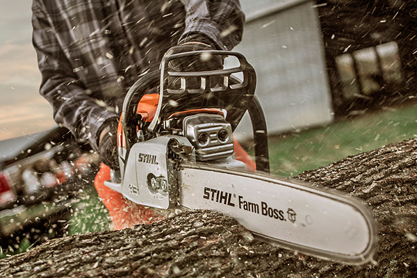
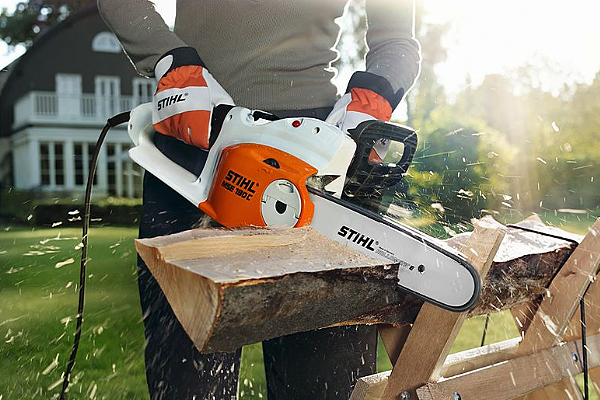
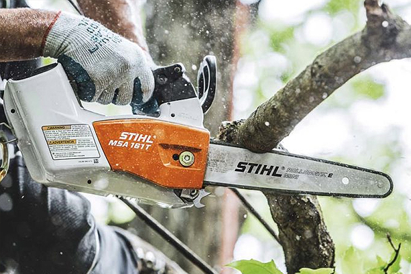

Pravi alati za prave ljude
Stihl
Neosporno najkvalitetniji brend baštenskog alata na svetu. Snaga, kvalitet izrade, dugotrajnost, garancija, optimalna težina i ergonomija su sve velike prednosti STIHL proizvoda u odnosu na njihove konkurente. Omiljeni alat profesionalnih i hobi korisnika sa 90 godina iskustva.
STIHL Testere
Benzinske testere
Dorasle svim profesionalnim izazovima, sa naprednom STIHL tehnologijom i bezbednosnim karakteristikama, STIHL motorne testere omogućavaju veliki kapacitet sečenja, malu težinu i puno komfora u radu.
Električne testere
STIHL električne testere predstavljaju posebnu klasu. Idealne su za upotrebu u zatvorenim prostorijama zato što su tihe, snažne i bez emisija.
Baterijske testere
Bilo da radite u svojoj bašti, dvorištu ili kao profesionalac, STIHL baterijska tehnologija možete odgovoriti svakom zadatku.